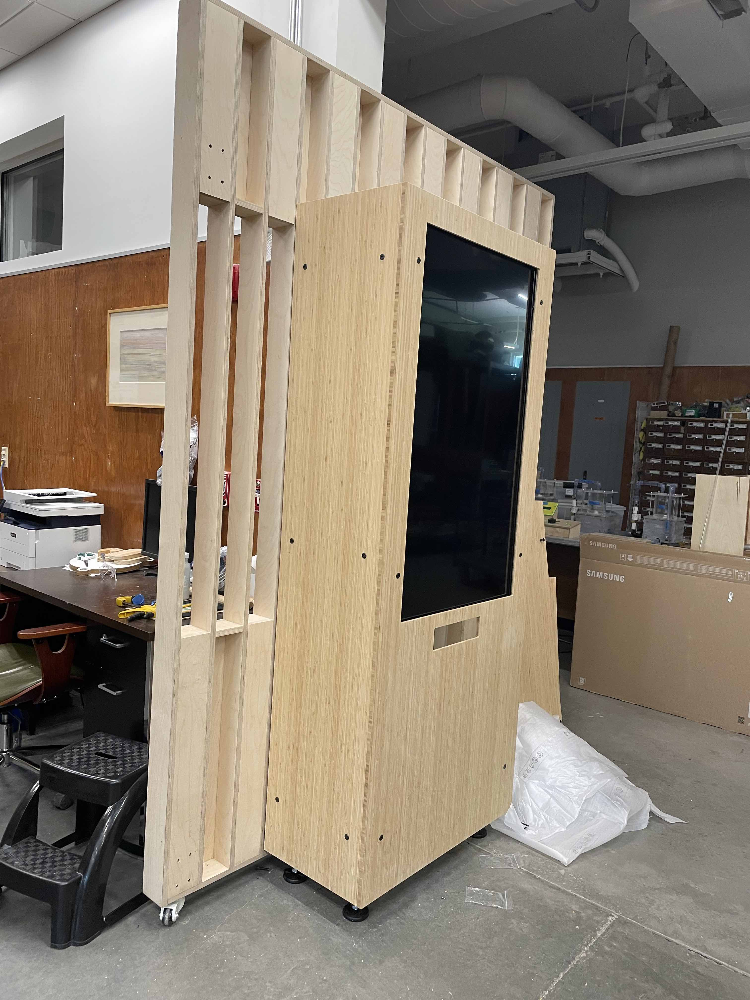

Selfie Station - 2022
We created an augmented reality STEM careers photo booth at Explora for their new STEM wing.
An Xbox Kinect infared sensor tracks users movements and pose, using the data to generate 3D costumes based on future careers.

Visitors can visualize themselves in fully animated real-time 3D modeled costumes of various future STEM careers. We designed costumes for jobs including laser technician, water administration scientist, computer scientist, solar panel technician, and others often related to other exhibits in the museum.

After the user takes a picture, they can choose to send it to a wall of virtual picture frames that cycle through recently taken pictures.
Contact Us
Please don't hesitate to contact us if you have any interest in working together on a project, comissioning a new or existing work or exhibit design, or general questions and inquiry. Visit our contact page for details.
If you'd like to see more examples of work done by Artific3 and our artists, check out our showcase page for details.
(PAGE STILL UNDER CONSTRUCITON)